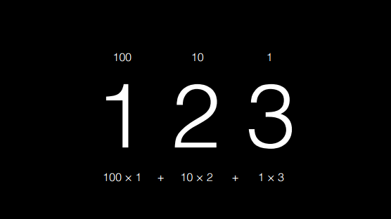
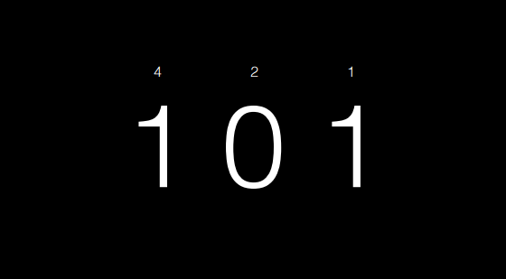
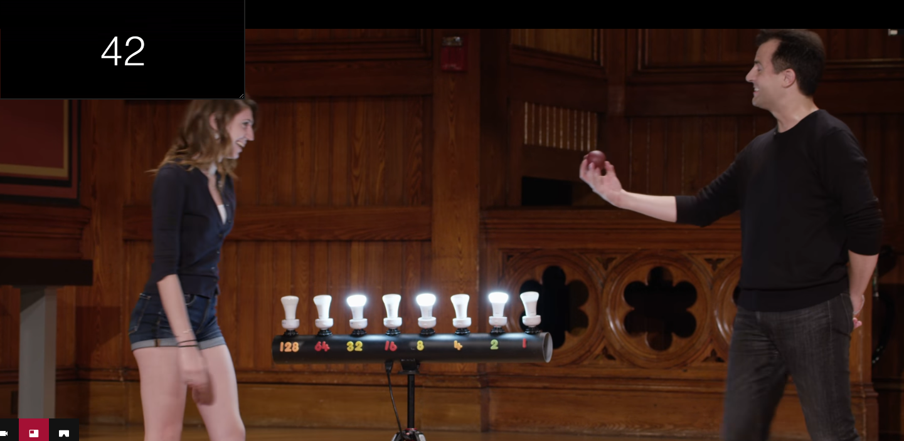
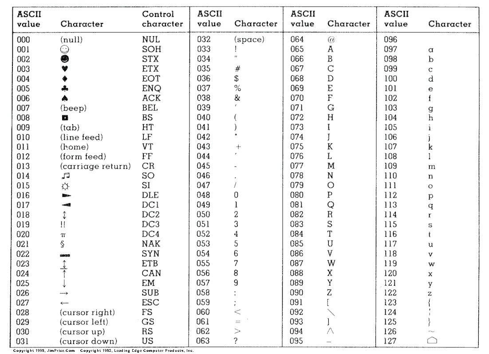

Yakim shu Hi, 這是我擴充腦內海馬體的地方。
【心得】CS50 - week 0
week 0 : 課程文檔
week 0 算是暖身，大概講一下基本觀念跟之後會常聽到的名詞解釋，以及在動手寫程式之前，可以先玩 scratch，了解寫程式會運用到的邏輯，對新手來說，簡單又不會被語法給卡住。
Algorithms - 演算法
什麼是演算法，寫程式一定會常聽到這個詞，看看以下這張圖：
演算法就是在 input & output 中間的黑盒子，進行了丟入問題以及回傳答案的過程。
而寫程式就是要想辦法實現那個神祕的黑盒子。
binary - 2 進位
生活中習慣的數字幾乎都是10進位 (decimal)，如果把 123 拆解開來會變成

123： 100 * 1 + 10 * 2 + 1 * 3
但是電腦只看得懂 0 & 1，所以都要轉成 2 進位 (binary)，以下是 5 的 2 進位表示法

5： 4 * 1 + 2 * 0 + 1 * 1
課程是用燈泡代表 128, 64, 32, 16, 8, 4, 2, 1
要表示42 的 2 進位，32, 8, 2 亮燈燈愣燈!!

練習
63、17的 2 進位值?
16 進位
更進階一點來還有 16 進位，RGB 表示顏色也很常用到，參考這篇RGB、HSL、Hex 網頁色彩碼，看完這篇全懂了
ASCII
ASCII 是一種國際標準的通用碼，根據維基百科的解釋
基於拉丁字母的一套電腦編碼系統。它主要用於顯示現代英語

也就是說當我對電腦輸入了 HI!，電腦接收到的其實是 72 73 33，cool ~~~

延伸學習：
ASCII只有在純英文(無重音符號)的時候才堪用，如果要加上其他語言就得用不同的編碼方式，像是網頁head裡常見的
<meta charset="utf-8">
其實到這邊我已經卡了老半天，想要弄懂字符編碼是怎麼一回事，發現沒那麼簡單，越查資料越搞不懂，像是從口袋拿出的耳機線一樣混亂，有興趣再延伸學習的可以參考：
(先深吸一口氣)
- 想了解編碼到底在編什麼碼：演算法筆記 - Code
- 約耳趣談 - 看不懂內容至少看得懂笑話：每個軟體開發者都絕對一定要會的Unicode及字元集必備知識(沒有藉口！)
- 不有趣但詳盡的說明：字符编码笔记：ASCII，Unicode和UTF-8
Written on March 7th, 2017 by Yakim shu
Feel free to share!